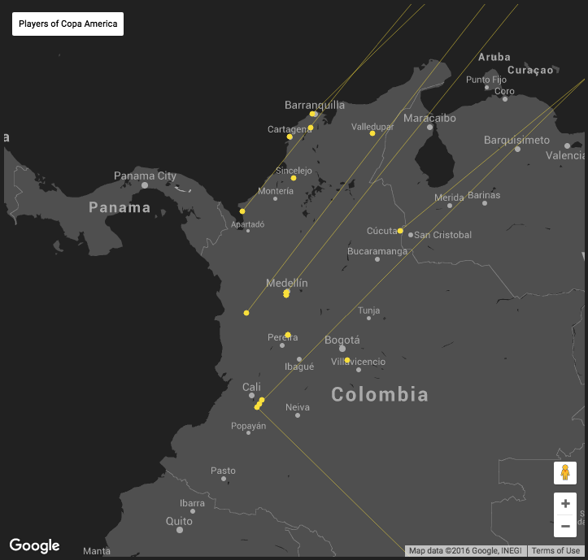
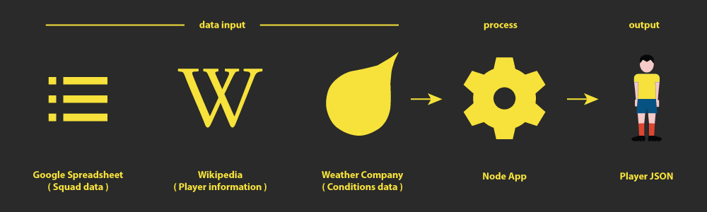

About this app ...
Equipo (the Spanish word for ‘team’) is a little Node.js and JavaScript app that mines Wikipedia and plots the origins of the soccer playes from Copa America, Euro 2016 and possibly other sports.

It visualizes the areas of the world continent where today’s legends of Barcelona, Madrid, London and Paris were formed.
It lets us drill in and view migration patterns. It uses historical and social data to learn more about the players. It also reveals a few surprises along the way.
How it works
The app mines wikipedia data to build up details about the squads and players of sports teams, and then iterates on that data to derive location data, weather data and more.

It plots the location of each player on a map, and visualizes the migration of players from where they were born to where they make a living.
Learn more
The app was built on
IBM Bluemix using a Node.js runtime. You can learn more about it in this blog post or by following @antonmc or by digging into the code